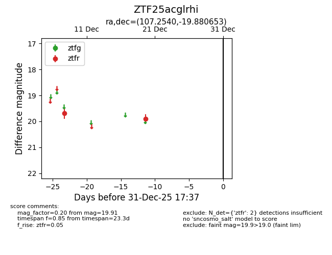
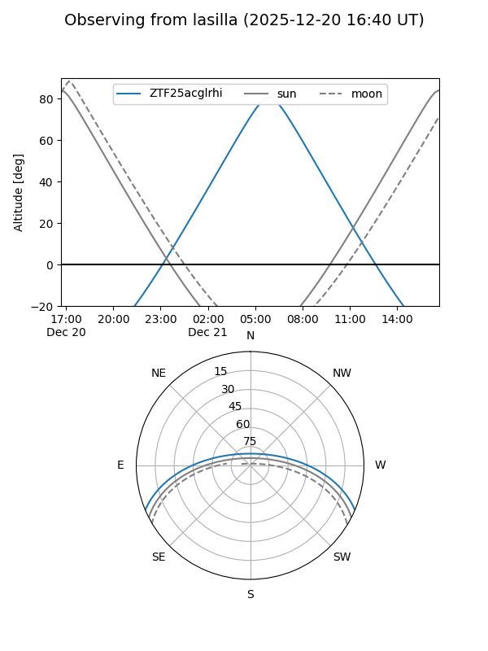
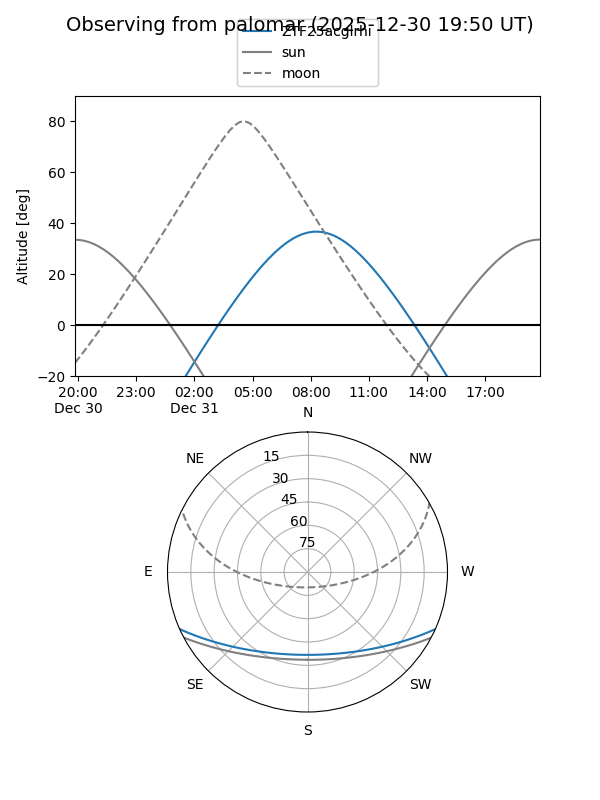

ZTF25acglrhi
Target ZTF25acglrhi at 2025-12-31 18:00
Aliases and brokers:
FINK: link
Lasair: link
ALeRCE: link
alt names
ZTF25acglrhi (ztf,fink_ztf)
Coordinates:
equatorial (ra, dec) = 107.2540,-19.88065
equatorial (HMS+DMS) = 07:09:00.95,-19:52:50.35
galactic (l, b) = (232.6203,-5.21730)
Flags:
Photometry:
last ztfr=19.91
2 ztfr detections
Lightcurve

Visibility


Additional plots